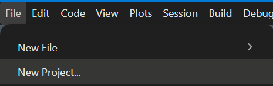
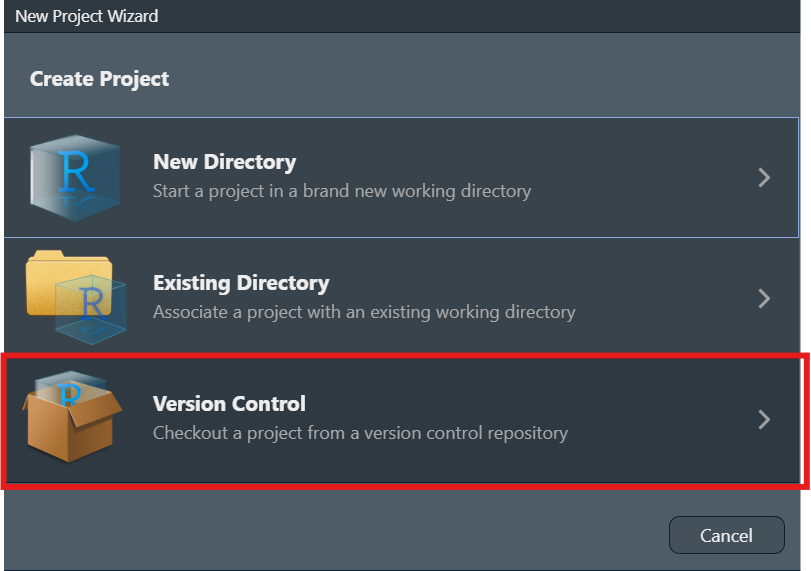
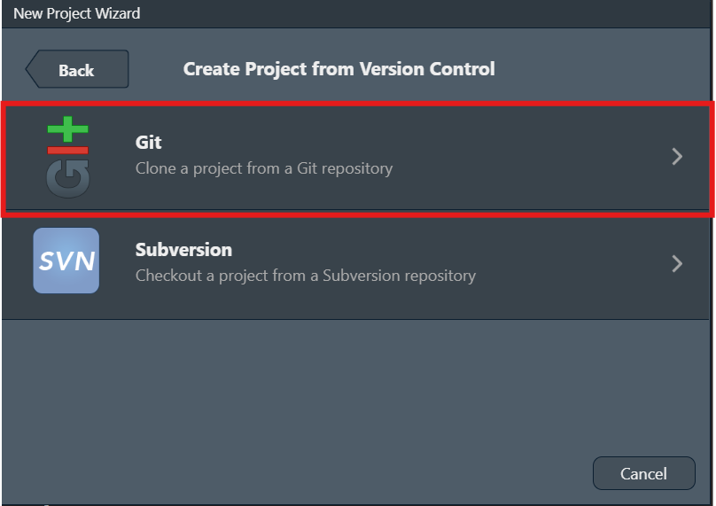
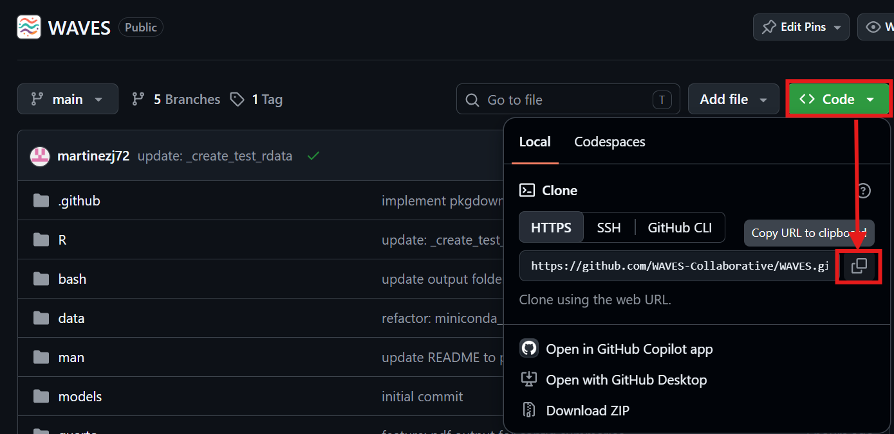
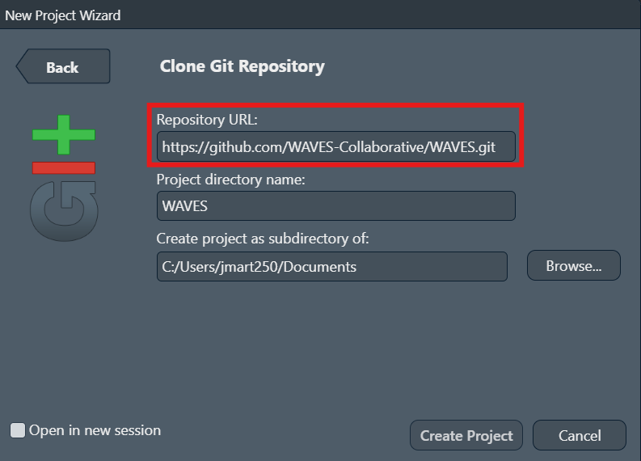

Preliminary Setup
For the following steps, administrator access should not be needed.
-
Install R
From this CRAN mirrors webpage, click on the mirror from the location closest to you.
On the following page, download and install R for your operating system. So far, only Windows and macOS have been tested.
The code has been tested on v4.4.1 and v4.5.2. We recommend the latest v4.5.2. but earlier versions down to 4.4.0 should work. Just note you will get warning messages that the packages were developed for 4.5.2.
-
Install RStudio
- From this POSIT RStudio webpage, click on the “DOWNLOAD RSTUDIO DESKTOP FOR WINDOWS/MACOS”
- A version from 2023 onwards should be okay.
-
Install compilation tools (platform-specific)
Windows:
- From the CRAN RTools webpage, download the RTools version specific to the R version being used (i.e. Rtools 4.4 for R v4.4.1, RTools 4.5 for R v4.5.2)
macOS:
Several R packages need to be compiled from source. Install the following dependencies via Homebrew by running the following command within the system shell (Terminal):
brew install cmake gcc gettextThen create
~/.R/Makevarsso R can find the installed libraries by running the following code within the system shell (Terminal):mkdir -p ~/.R cat > ~/.R/Makevars << 'EOF' CPPFLAGS += -I/opt/homebrew/opt/gettext/include LDFLAGS += -L/opt/homebrew/opt/gettext/lib -lintl -L/opt/homebrew/opt/gcc/lib/gcc/current FLIBS = -L/opt/homebrew/opt/gcc/lib/gcc/current -lgfortran -lquadmath FC = /opt/homebrew/bin/gfortran F77 = /opt/homebrew/bin/gfortran EOFAdditionally, the
arrowR package requires setting an environment variable before runningrenv::restore(). Run the following within the system shell (Terminal):export LIBARROW_BINARY=trueThis tells the package to download a pre-built Arrow C++ library instead of compiling against the system version.
-
Install Git by going to git install webpage. There, select your operating system and follow the instructions on the webpage.
- In the git setup wizard, select all the default options.
-
Open the RStudio application. In the Navigation bar at the top left corner, click File -> New Project…

-
In the New Project wizard pop-up, click “Version Control”.

-
Then, click “Git”.

-
Go to the WAVES github page, Click on the green “Code” button, and click the “Copy to Clipboard” button.

-
Go back to the RStudio New Project pop-up and paste the WAVES Github link in the Repository URL section. The “Project directory name” will automatically appear as WAVES.

-
Choose location of WAVES repository in the “Create project as subdirectory of” section.
- The location of the WAVES repository can generally be downloaded anywhere on your system. However, it is HIGHLY recommended to:
- Download the repository on a mapped network drive or on the actual computer system itself, NOT on the cloud such as OneDrive.
- Not save it directly under a directory with the following names:
bash,data,logs,media,models,quarto,R,renvorreports. - Keep it on the same drive where the raw accelerometer data is located.
- The location of the WAVES repository can generally be downloaded anywhere on your system. However, it is HIGHLY recommended to:
Click the “Create Project” button.
You are now ready to start running the configuration pipeline! See vignette("instructions-config") to continue.